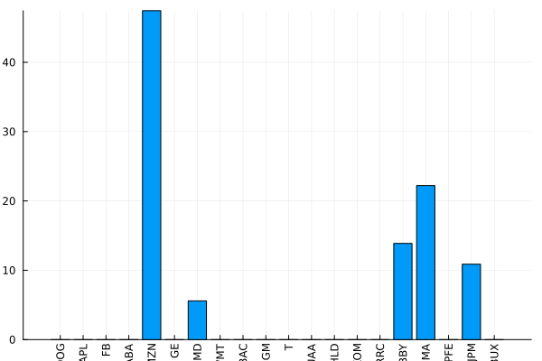
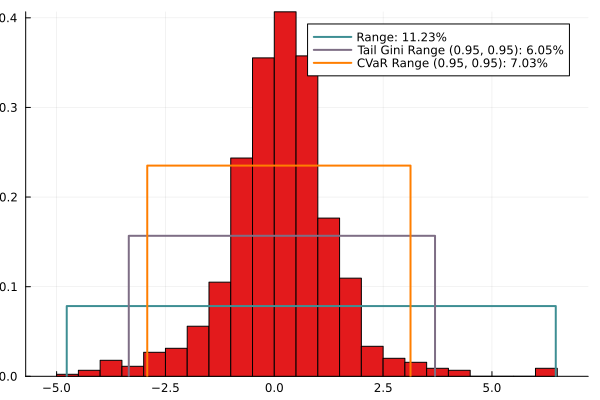
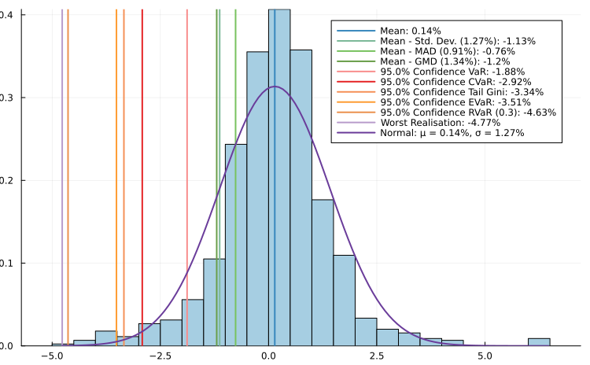
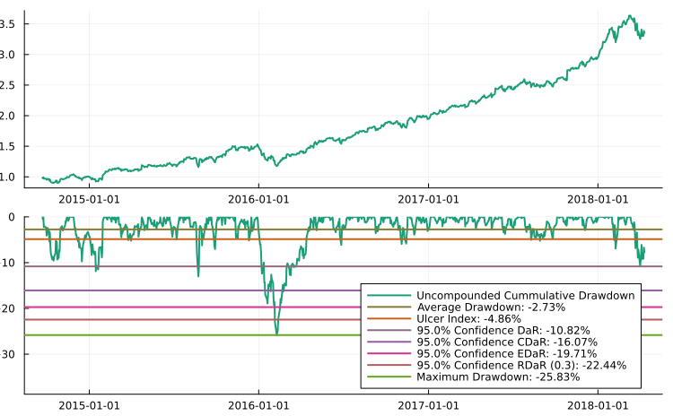
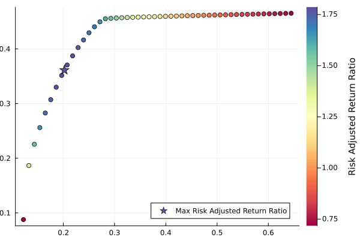
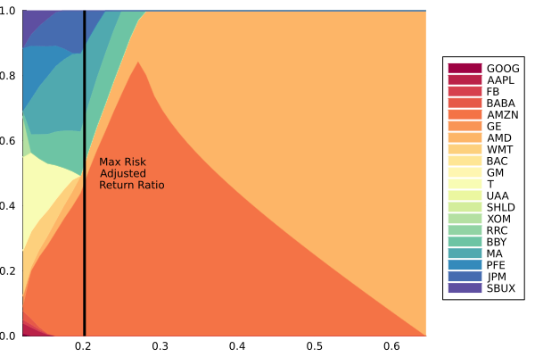
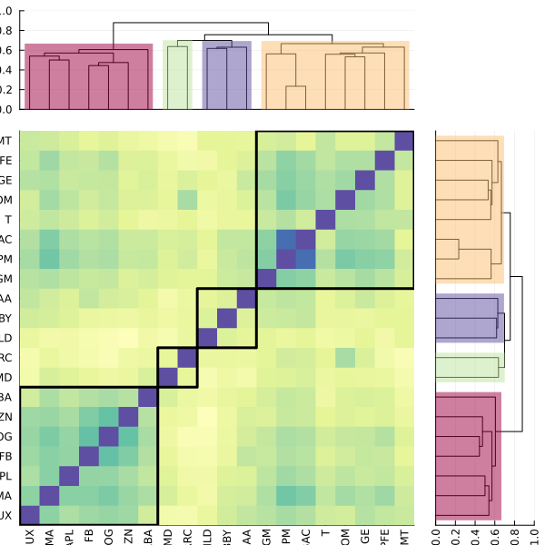
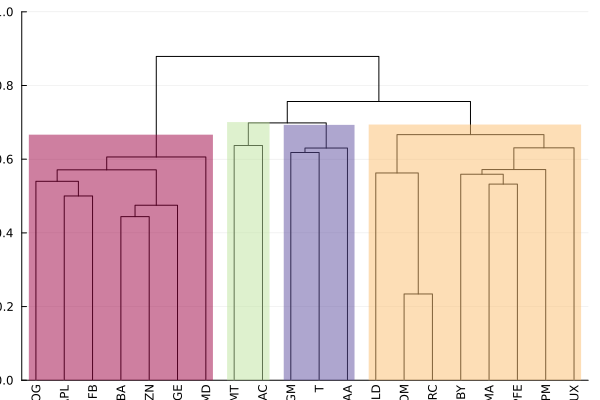

The source files for all examples can be found in /examples.
Simple Mean Variance Optimisation
This is a minimal working example of PortfolioOptimiser.jl. We use only the default keyword arguments for all functions. In later examples we will explore more of PortfolioOptimiser.jl's functionality.
using PortfolioOptimiser, PrettyTables, TimeSeries, DataFrames, CSV, Clarabel
# This is a helper function for displaying tables
# with numbers as percentages with 3 decimal points.
fmt = (v, i, j) -> begin
if j == 1
return v
else
return isa(v, Number) ? "$(round(v*100, digits=3)) %" : v
end
end;Creating a Portfolio instance
We can create an instance of Portfolio or HCPortfolio by calling its keyword constructor. This is a minimum viable example. There are many other keyword arguments that fine-tune the portfolio. Alternatively, you can directly modify the instance's fields. Many are guarded by assertions to ensure correctness, some are immutable for the same reason.
We can directly provide a TimeArray of price data to the constructor. Which computes the return data as follows.
prices = TimeArray(CSV.File("./stock_prices.csv"); timestamp = :date)
returns = dropmissing!(DataFrame(percentchange(prices)))
pretty_table(returns[1:5, :]; formatters = fmt)┌────────────┬──────────┬──────────┬──────────┬──────────┬──────────┬──────────┬──────────┬──────────┬──────────┬──────────┬──────────┬──────────┬──────────┬──────────┬──────────┬──────────┬──────────┬──────────┬──────────┬──────────┐
│ timestamp │ GOOG │ AAPL │ FB │ BABA │ AMZN │ GE │ AMD │ WMT │ BAC │ GM │ T │ UAA │ SHLD │ XOM │ RRC │ BBY │ MA │ PFE │ JPM │ SBUX │
│ Dates.Date │ Float64 │ Float64 │ Float64 │ Float64 │ Float64 │ Float64 │ Float64 │ Float64 │ Float64 │ Float64 │ Float64 │ Float64 │ Float64 │ Float64 │ Float64 │ Float64 │ Float64 │ Float64 │ Float64 │ Float64 │
├────────────┼──────────┼──────────┼──────────┼──────────┼──────────┼──────────┼──────────┼──────────┼──────────┼──────────┼──────────┼──────────┼──────────┼──────────┼──────────┼──────────┼──────────┼──────────┼──────────┼──────────┤
│ 2014-09-22 │ -1.461 % │ 0.099 % │ -1.425 % │ -4.26 % │ -2.058 % │ -0.799 % │ -1.312 % │ -0.69 % │ 0.472 % │ -1.473 % │ 0.085 % │ -2.836 % │ -1.012 % │ -0.597 % │ -1.817 % │ -2.716 % │ -1.449 % │ -0.724 % │ -0.327 % │ -1.932 % │
│ 2014-09-23 │ -1.062 % │ 1.563 % │ 1.94 % │ -3.026 % │ -0.268 % │ -0.23 % │ -1.862 % │ -0.93 % │ 0.117 % │ -0.658 % │ -0.676 % │ 0.617 % │ 1.022 % │ -0.528 % │ -0.384 % │ -0.921 % │ -0.853 % │ -0.431 % │ 0.049 % │ -0.858 % │
│ 2014-09-24 │ 1.18 % │ -0.867 % │ 0.319 % │ 3.9 % │ 1.415 % │ -0.346 % │ 0.271 % │ 1.958 % │ 0.762 % │ 1.294 % │ 0.397 % │ 2.691 % │ -4.588 % │ -0.219 % │ -1.486 % │ 1.888 % │ 2.039 % │ 0.865 % │ 1.132 % │ 1.839 % │
│ 2014-09-25 │ -2.199 % │ -3.813 % │ -1.681 % │ -1.822 % │ -1.913 % │ -1.465 % │ -1.892 % │ -1.245 % │ -1.921 % │ -2.318 % │ -0.904 % │ -1.645 % │ -2.84 % │ -1.638 % │ -2.364 % │ -2.148 % │ -3.024 % │ -1.089 % │ -2.401 % │ -1.593 % │
│ 2014-09-26 │ 0.355 % │ 2.943 % │ 2.033 % │ 1.732 % │ 0.398 % │ 0.313 % │ -0.826 % │ 0.486 % │ 1.068 % │ 0.913 % │ 0.57 % │ 3.36 % │ -3.157 % │ 1.252 % │ 0.579 % │ -0.962 % │ 0.455 % │ -0.867 % │ 0.682 % │ 1.417 % │
└────────────┴──────────┴──────────┴──────────┴──────────┴──────────┴──────────┴──────────┴──────────┴──────────┴──────────┴──────────┴──────────┴──────────┴──────────┴──────────┴──────────┴──────────┴──────────┴──────────┴──────────┘The advantage of using pricing information over returns is that all missing data is dropped, which ensures the statistics are well-behaved. It also allows the function to automatically find the latest pricing information, which is needed for discretely allocating portfolios according to available funds and stock prices.
portfolio = Portfolio(;
# Prices TimeArray, the returns are internally computed.
prices = prices,
# We need to provide solvers and solver-specific options.
solvers = Dict(
# We will use the Clarabel.jl optimiser. In this case we use a dictionary
# for the value, but we can also use named tuples, all we need are key-value
# pairs.
:Clarabel => Dict(
# :solver key must contain the optimiser recipe.
# Can also call JuMP.optimizer_with_attributes()
# https://jump.dev/JuMP.jl/stable/api/JuMP/#JuMP.optimizer_with_attributes
# to add the attributes directly to the solver.
# An equivalent configuration using this approach would be:
# :solver => JuMP.optimizer_with_attributes(
# Clarabel.Optimizer,
# "verbose" => false, "max_step_fraction" => 0.75
# )
:solver => Clarabel.Optimizer,
# :params key is optional, but if it is present, it defines solver-specific
# attributes/configurations. This often needs to be a dictionary as the
# solver attributes are usually strings.
:params => Dict("verbose" => false, "max_step_fraction" => 0.75),
),
),
);We can show how the prices TimeArray is used to compute the returns series, which is decomposed into a vector of timestamps, and the returns Matrix. We can check this is the case by reconstructing the returns DataFrame form above.
returns == hcat(
DataFrame(timestamp = portfolio.timestamps),
DataFrame(
[portfolio.returns[:, i] for i in axes(portfolio.returns, 2)],
portfolio.assets,
),
)trueAnother nice thing about Portfolio() and HCPortfolio() is that the asset tickers and timestamps can be obtained from either a TimeArray with price information, or DataFrame with returns information. Since we used pricing data, we can obtain the latest prices too.
pretty_table(DataFrame(assets = portfolio.assets, latest_prices = portfolio.latest_prices))┌────────┬───────────────┐
│ assets │ latest_prices │
│ String │ Float64 │
├────────┼───────────────┤
│ GOOG │ 1019.97 │
│ AAPL │ 172.44 │
│ FB │ 166.32 │
│ BABA │ 175.36 │
│ AMZN │ 1427.05 │
│ GE │ 12.97 │
│ AMD │ 9.82 │
│ WMT │ 85.91 │
│ BAC │ 29.9 │
│ GM │ 39.0 │
│ T │ 35.25 │
│ UAA │ 16.74 │
│ SHLD │ 3.3 │
│ XOM │ 77.43 │
│ RRC │ 14.99 │
│ BBY │ 70.91 │
│ MA │ 172.36 │
│ PFE │ 35.79 │
│ JPM │ 110.62 │
│ SBUX │ 59.42 │
└────────┴───────────────┘Optimal Risk-adjusted Return Ratio
For some risk measures/constraints, we need to compute some statistical quantities. Since we're going to showcase a mean-variance optimisation, we need to estimate the asset mean returns and covariance. We can do this by calling asset_statistics!. This function also has myriad keyword options, but we'll stick to the basics.
asset_statistics!(portfolio, calc_kurt = false)We can then call opt_port! with default arguments, which optimises for the risk adjusted return ratio of the mean variance portfolio.
w = opt_port!(portfolio)
pretty_table(w; formatters = fmt)┌─────────┬──────────┐
│ tickers │ weights │
│ String │ Float64 │
├─────────┼──────────┤
│ GOOG │ 0.0 % │
│ AAPL │ 0.0 % │
│ FB │ 0.0 % │
│ BABA │ 0.0 % │
│ AMZN │ 47.444 % │
│ GE │ 0.0 % │
│ AMD │ 5.589 % │
│ WMT │ 0.0 % │
│ BAC │ 0.0 % │
│ GM │ 0.0 % │
│ T │ 0.0 % │
│ UAA │ 0.0 % │
│ SHLD │ 0.0 % │
│ XOM │ 0.0 % │
│ RRC │ 0.0 % │
│ BBY │ 13.876 % │
│ MA │ 22.214 % │
│ PFE │ 0.0 % │
│ JPM │ 10.876 % │
│ SBUX │ 0.0 % │
└─────────┴──────────┘Informative Plots
There are a number of plots we can create from an optimised portfolio. For example we can plot the composition as a bar chart.
fig1 = plot_bar(portfolio)
We can also plot various expected ranges of returns of this portfolio.
fig2 = plot_range(portfolio)
We can view downside risk measures as well.
fig3 = plot_hist(portfolio)
And we can view cumulative uncompounded drawdowns too.
fig4 = plot_drawdown(portfolio)
Efficient Frontier
We can also efficiently compute the asset weights of the portfolio's efficient frontier. This can be done manually but having a dedicated function is nice. We compute 50 linearly distributed points along the frontier, plus the point that maximises the risk adjusted return ratio in the final column.
frontier = efficient_frontier!(portfolio; points = 50)
pretty_table(frontier[:weights]; formatters = fmt)┌─────────┬──────────┬──────────┬──────────┬──────────┬──────────┬──────────┬──────────┬──────────┬──────────┬──────────┬──────────┬──────────┬──────────┬──────────┬──────────┬─────────┬─────────┬──────────┬──────────┬──────────┬──────────┬──────────┬──────────┬──────────┬──────────┬──────────┬──────────┬──────────┬──────────┬──────────┬──────────┬──────────┬──────────┬──────────┬─────────┬──────────┬──────────┬──────────┬──────────┬──────────┬──────────┬──────────┬──────────┬──────────┬──────────┬──────────┬──────────┬──────────┬──────────┬─────────┬──────────┐
│ tickers │ 1 │ 2 │ 3 │ 4 │ 5 │ 6 │ 7 │ 8 │ 9 │ 10 │ 11 │ 12 │ 13 │ 14 │ 15 │ 16 │ 17 │ 18 │ 19 │ 20 │ 21 │ 22 │ 23 │ 24 │ 25 │ 26 │ 27 │ 28 │ 29 │ 30 │ 31 │ 32 │ 33 │ 34 │ 35 │ 36 │ 37 │ 38 │ 39 │ 40 │ 41 │ 42 │ 43 │ 44 │ 45 │ 46 │ 47 │ 48 │ 49 │ 50 │ 51 │
│ String │ Float64 │ Float64 │ Float64 │ Float64 │ Float64 │ Float64 │ Float64 │ Float64 │ Float64 │ Float64 │ Float64 │ Float64 │ Float64 │ Float64 │ Float64 │ Float64 │ Float64 │ Float64 │ Float64 │ Float64 │ Float64 │ Float64 │ Float64 │ Float64 │ Float64 │ Float64 │ Float64 │ Float64 │ Float64 │ Float64 │ Float64 │ Float64 │ Float64 │ Float64 │ Float64 │ Float64 │ Float64 │ Float64 │ Float64 │ Float64 │ Float64 │ Float64 │ Float64 │ Float64 │ Float64 │ Float64 │ Float64 │ Float64 │ Float64 │ Float64 │ Float64 │
├─────────┼──────────┼──────────┼──────────┼──────────┼──────────┼──────────┼──────────┼──────────┼──────────┼──────────┼──────────┼──────────┼──────────┼──────────┼──────────┼─────────┼─────────┼──────────┼──────────┼──────────┼──────────┼──────────┼──────────┼──────────┼──────────┼──────────┼──────────┼──────────┼──────────┼──────────┼──────────┼──────────┼──────────┼──────────┼─────────┼──────────┼──────────┼──────────┼──────────┼──────────┼──────────┼──────────┼──────────┼──────────┼──────────┼──────────┼──────────┼──────────┼──────────┼─────────┼──────────┤
│ GOOG │ 0.791 % │ 0.0 % │ 0.0 % │ 0.0 % │ 0.0 % │ 0.0 % │ 0.0 % │ 0.0 % │ 0.0 % │ 0.0 % │ 0.0 % │ 0.0 % │ 0.0 % │ 0.0 % │ 0.0 % │ 0.0 % │ 0.0 % │ 0.0 % │ 0.0 % │ 0.0 % │ 0.0 % │ 0.0 % │ 0.0 % │ 0.0 % │ 0.0 % │ 0.0 % │ 0.0 % │ 0.0 % │ 0.0 % │ 0.0 % │ 0.0 % │ 0.0 % │ 0.0 % │ 0.0 % │ 0.0 % │ 0.0 % │ 0.0 % │ 0.0 % │ 0.0 % │ 0.0 % │ 0.0 % │ 0.0 % │ 0.0 % │ 0.0 % │ 0.0 % │ 0.0 % │ 0.0 % │ 0.0 % │ 0.0 % │ 0.0 % │ 0.0 % │
│ AAPL │ 3.069 % │ 2.548 % │ 1.336 % │ 0.376 % │ 0.0 % │ 0.0 % │ 0.0 % │ 0.0 % │ 0.0 % │ 0.0 % │ 0.0 % │ 0.0 % │ 0.0 % │ 0.0 % │ 0.0 % │ 0.0 % │ 0.0 % │ 0.0 % │ 0.0 % │ 0.0 % │ 0.0 % │ 0.0 % │ 0.0 % │ 0.0 % │ 0.0 % │ 0.0 % │ 0.0 % │ 0.0 % │ 0.0 % │ 0.0 % │ 0.0 % │ 0.0 % │ 0.0 % │ 0.0 % │ 0.0 % │ 0.0 % │ 0.0 % │ 0.0 % │ 0.0 % │ 0.0 % │ 0.0 % │ 0.0 % │ 0.0 % │ 0.0 % │ 0.0 % │ 0.0 % │ 0.0 % │ 0.0 % │ 0.0 % │ 0.0 % │ 0.0 % │
│ FB │ 1.051 % │ 0.92 % │ 0.555 % │ 0.256 % │ 0.0 % │ 0.0 % │ 0.0 % │ 0.0 % │ 0.0 % │ 0.0 % │ 0.0 % │ 0.0 % │ 0.0 % │ 0.0 % │ 0.0 % │ 0.0 % │ 0.0 % │ 0.0 % │ 0.0 % │ 0.0 % │ 0.0 % │ 0.0 % │ 0.0 % │ 0.0 % │ 0.0 % │ 0.0 % │ 0.0 % │ 0.0 % │ 0.0 % │ 0.0 % │ 0.0 % │ 0.0 % │ 0.0 % │ 0.0 % │ 0.0 % │ 0.0 % │ 0.0 % │ 0.0 % │ 0.0 % │ 0.0 % │ 0.0 % │ 0.0 % │ 0.0 % │ 0.0 % │ 0.0 % │ 0.0 % │ 0.0 % │ 0.0 % │ 0.0 % │ 0.0 % │ 0.0 % │
│ BABA │ 2.748 % │ 1.796 % │ 0.755 % │ 0.001 % │ 0.0 % │ 0.0 % │ 0.0 % │ 0.0 % │ 0.0 % │ 0.0 % │ 0.0 % │ 0.0 % │ 0.0 % │ 0.0 % │ 0.0 % │ 0.0 % │ 0.0 % │ 0.0 % │ 0.0 % │ 0.0 % │ 0.0 % │ 0.0 % │ 0.0 % │ 0.0 % │ 0.0 % │ 0.0 % │ 0.0 % │ 0.0 % │ 0.0 % │ 0.0 % │ 0.0 % │ 0.0 % │ 0.0 % │ 0.0 % │ 0.0 % │ 0.0 % │ 0.0 % │ 0.0 % │ 0.0 % │ 0.0 % │ 0.0 % │ 0.0 % │ 0.0 % │ 0.0 % │ 0.0 % │ 0.0 % │ 0.0 % │ 0.0 % │ 0.0 % │ 0.0 % │ 0.0 % │
│ AMZN │ 1.228 % │ 14.813 % │ 21.854 % │ 27.386 % │ 32.088 % │ 36.137 % │ 39.865 % │ 43.985 % │ 50.961 % │ 57.238 % │ 62.957 % │ 68.916 % │ 74.542 % │ 79.986 % │ 84.493 % │ 80.21 % │ 73.79 % │ 69.346 % │ 65.662 % │ 62.404 % │ 59.427 % │ 56.649 % │ 54.023 % │ 51.515 % │ 49.102 % │ 46.767 % │ 44.498 % │ 42.285 % │ 40.121 % │ 37.998 % │ 35.912 % │ 33.859 % │ 31.834 % │ 29.836 % │ 27.86 % │ 25.906 % │ 23.971 % │ 22.054 % │ 20.152 % │ 18.266 % │ 16.392 % │ 14.531 % │ 12.682 % │ 10.844 % │ 9.015 % │ 7.196 % │ 5.385 % │ 3.583 % │ 1.788 % │ 0.0 % │ 47.444 % │
│ GE │ 3.341 % │ 0.0 % │ 0.0 % │ 0.0 % │ 0.0 % │ 0.0 % │ 0.0 % │ 0.0 % │ 0.0 % │ 0.0 % │ 0.0 % │ 0.0 % │ 0.0 % │ 0.0 % │ 0.0 % │ 0.0 % │ 0.0 % │ 0.0 % │ 0.0 % │ 0.0 % │ 0.0 % │ 0.0 % │ 0.0 % │ 0.0 % │ 0.0 % │ 0.0 % │ 0.0 % │ 0.0 % │ 0.0 % │ 0.0 % │ 0.0 % │ 0.0 % │ 0.0 % │ 0.0 % │ 0.0 % │ 0.0 % │ 0.0 % │ 0.0 % │ 0.0 % │ 0.0 % │ 0.0 % │ 0.0 % │ 0.0 % │ 0.0 % │ 0.0 % │ 0.0 % │ 0.0 % │ 0.0 % │ 0.0 % │ 0.0 % │ 0.0 % │
│ AMD │ 0.0 % │ 0.947 % │ 1.884 % │ 2.618 % │ 3.216 % │ 3.799 % │ 4.36 % │ 4.983 % │ 6.215 % │ 7.331 % │ 8.348 % │ 9.361 % │ 10.336 % │ 11.59 % │ 12.628 % │ 19.79 % │ 26.21 % │ 30.654 % │ 34.338 % │ 37.596 % │ 40.573 % │ 43.351 % │ 45.977 % │ 48.485 % │ 50.898 % │ 53.233 % │ 55.502 % │ 57.715 % │ 59.879 % │ 62.002 % │ 64.088 % │ 66.141 % │ 68.166 % │ 70.164 % │ 72.14 % │ 74.094 % │ 76.029 % │ 77.946 % │ 79.848 % │ 81.734 % │ 83.608 % │ 85.469 % │ 87.318 % │ 89.156 % │ 90.985 % │ 92.804 % │ 94.615 % │ 96.417 % │ 98.212 % │ 100.0 % │ 5.589 % │
│ WMT │ 13.985 % │ 11.121 % │ 9.37 % │ 7.99 % │ 6.703 % │ 5.23 % │ 3.754 % │ 0.364 % │ 0.0 % │ 0.0 % │ 0.0 % │ 0.0 % │ 0.0 % │ 0.0 % │ 0.0 % │ 0.0 % │ 0.0 % │ 0.0 % │ 0.0 % │ 0.0 % │ 0.0 % │ 0.0 % │ 0.0 % │ 0.0 % │ 0.0 % │ 0.0 % │ 0.0 % │ 0.0 % │ 0.0 % │ 0.0 % │ 0.0 % │ 0.0 % │ 0.0 % │ 0.0 % │ 0.0 % │ 0.0 % │ 0.0 % │ 0.0 % │ 0.0 % │ 0.0 % │ 0.0 % │ 0.0 % │ 0.0 % │ 0.0 % │ 0.0 % │ 0.0 % │ 0.0 % │ 0.0 % │ 0.0 % │ 0.0 % │ 0.0 % │
│ BAC │ 0.0 % │ 0.0 % │ 0.0 % │ 0.0 % │ 0.0 % │ 0.0 % │ 0.0 % │ 0.0 % │ 0.0 % │ 0.0 % │ 0.0 % │ 0.0 % │ 0.0 % │ 0.0 % │ 0.0 % │ 0.0 % │ 0.0 % │ 0.0 % │ 0.0 % │ 0.0 % │ 0.0 % │ 0.0 % │ 0.0 % │ 0.0 % │ 0.0 % │ 0.0 % │ 0.0 % │ 0.0 % │ 0.0 % │ 0.0 % │ 0.0 % │ 0.0 % │ 0.0 % │ 0.0 % │ 0.0 % │ 0.0 % │ 0.0 % │ 0.0 % │ 0.0 % │ 0.0 % │ 0.0 % │ 0.0 % │ 0.0 % │ 0.0 % │ 0.0 % │ 0.0 % │ 0.0 % │ 0.0 % │ 0.0 % │ 0.0 % │ 0.0 % │
│ GM │ 0.001 % │ 0.0 % │ 0.0 % │ 0.0 % │ 0.0 % │ 0.0 % │ 0.0 % │ 0.0 % │ 0.0 % │ 0.0 % │ 0.0 % │ 0.0 % │ 0.0 % │ 0.0 % │ 0.0 % │ 0.0 % │ 0.0 % │ 0.0 % │ 0.0 % │ 0.0 % │ 0.0 % │ 0.0 % │ 0.0 % │ 0.0 % │ 0.0 % │ 0.0 % │ 0.0 % │ 0.0 % │ 0.0 % │ 0.0 % │ 0.0 % │ 0.0 % │ 0.0 % │ 0.0 % │ 0.0 % │ 0.0 % │ 0.0 % │ 0.0 % │ 0.0 % │ 0.0 % │ 0.0 % │ 0.0 % │ 0.0 % │ 0.0 % │ 0.0 % │ 0.0 % │ 0.0 % │ 0.0 % │ 0.0 % │ 0.0 % │ 0.0 % │
│ T │ 28.782 % │ 24.285 % │ 18.775 % │ 14.439 % │ 10.519 % │ 6.543 % │ 2.708 % │ 0.0 % │ 0.0 % │ 0.0 % │ 0.0 % │ 0.0 % │ 0.0 % │ 0.0 % │ 0.0 % │ 0.0 % │ 0.0 % │ 0.0 % │ 0.0 % │ 0.0 % │ 0.0 % │ 0.0 % │ 0.0 % │ 0.0 % │ 0.0 % │ 0.0 % │ 0.0 % │ 0.0 % │ 0.0 % │ 0.0 % │ 0.0 % │ 0.0 % │ 0.0 % │ 0.0 % │ 0.0 % │ 0.0 % │ 0.0 % │ 0.0 % │ 0.0 % │ 0.0 % │ 0.0 % │ 0.0 % │ 0.0 % │ 0.0 % │ 0.0 % │ 0.0 % │ 0.0 % │ 0.0 % │ 0.0 % │ 0.0 % │ 0.0 % │
│ UAA │ 0.0 % │ 0.0 % │ 0.0 % │ 0.0 % │ 0.0 % │ 0.0 % │ 0.0 % │ 0.0 % │ 0.0 % │ 0.0 % │ 0.0 % │ 0.0 % │ 0.0 % │ 0.0 % │ 0.0 % │ 0.0 % │ 0.0 % │ 0.0 % │ 0.0 % │ 0.0 % │ 0.0 % │ 0.0 % │ 0.0 % │ 0.0 % │ 0.0 % │ 0.0 % │ 0.0 % │ 0.0 % │ 0.0 % │ 0.0 % │ 0.0 % │ 0.0 % │ 0.0 % │ 0.0 % │ 0.0 % │ 0.0 % │ 0.0 % │ 0.0 % │ 0.0 % │ 0.0 % │ 0.0 % │ 0.0 % │ 0.0 % │ 0.0 % │ 0.0 % │ 0.0 % │ 0.0 % │ 0.0 % │ 0.0 % │ 0.0 % │ 0.0 % │
│ SHLD │ 0.0 % │ 0.0 % │ 0.0 % │ 0.0 % │ 0.0 % │ 0.0 % │ 0.0 % │ 0.0 % │ 0.0 % │ 0.0 % │ 0.0 % │ 0.0 % │ 0.0 % │ 0.0 % │ 0.0 % │ 0.0 % │ 0.0 % │ 0.0 % │ 0.0 % │ 0.0 % │ 0.0 % │ 0.0 % │ 0.0 % │ 0.0 % │ 0.0 % │ 0.0 % │ 0.0 % │ 0.0 % │ 0.0 % │ 0.0 % │ 0.0 % │ 0.0 % │ 0.0 % │ 0.0 % │ 0.0 % │ 0.0 % │ 0.0 % │ 0.0 % │ 0.0 % │ 0.0 % │ 0.0 % │ 0.0 % │ 0.0 % │ 0.0 % │ 0.0 % │ 0.0 % │ 0.0 % │ 0.0 % │ 0.0 % │ 0.0 % │ 0.0 % │
│ XOM │ 12.528 % │ 0.0 % │ 0.0 % │ 0.0 % │ 0.0 % │ 0.0 % │ 0.0 % │ 0.0 % │ 0.0 % │ 0.0 % │ 0.0 % │ 0.0 % │ 0.0 % │ 0.0 % │ 0.0 % │ 0.0 % │ 0.0 % │ 0.0 % │ 0.0 % │ 0.0 % │ 0.0 % │ 0.0 % │ 0.0 % │ 0.0 % │ 0.0 % │ 0.0 % │ 0.0 % │ 0.0 % │ 0.0 % │ 0.0 % │ 0.0 % │ 0.0 % │ 0.0 % │ 0.0 % │ 0.0 % │ 0.0 % │ 0.0 % │ 0.0 % │ 0.0 % │ 0.0 % │ 0.0 % │ 0.0 % │ 0.0 % │ 0.0 % │ 0.0 % │ 0.0 % │ 0.0 % │ 0.0 % │ 0.0 % │ 0.0 % │ 0.0 % │
│ RRC │ 0.0 % │ 0.0 % │ 0.0 % │ 0.0 % │ 0.0 % │ 0.0 % │ 0.0 % │ 0.0 % │ 0.0 % │ 0.0 % │ 0.0 % │ 0.0 % │ 0.0 % │ 0.0 % │ 0.0 % │ 0.0 % │ 0.0 % │ 0.0 % │ 0.0 % │ 0.0 % │ 0.0 % │ 0.0 % │ 0.0 % │ 0.0 % │ 0.0 % │ 0.0 % │ 0.0 % │ 0.0 % │ 0.0 % │ 0.0 % │ 0.0 % │ 0.0 % │ 0.0 % │ 0.0 % │ 0.0 % │ 0.0 % │ 0.0 % │ 0.0 % │ 0.0 % │ 0.0 % │ 0.0 % │ 0.0 % │ 0.0 % │ 0.0 % │ 0.0 % │ 0.0 % │ 0.0 % │ 0.0 % │ 0.0 % │ 0.0 % │ 0.0 % │
│ BBY │ 1.508 % │ 5.535 % │ 7.451 % │ 8.957 % │ 10.257 % │ 11.384 % │ 12.414 % │ 13.475 % │ 14.239 % │ 14.888 % │ 15.479 % │ 15.511 % │ 15.122 % │ 8.424 % │ 2.879 % │ 0.0 % │ 0.0 % │ 0.0 % │ 0.0 % │ 0.0 % │ 0.0 % │ 0.0 % │ 0.0 % │ 0.0 % │ 0.0 % │ 0.0 % │ 0.0 % │ 0.0 % │ 0.0 % │ 0.0 % │ 0.0 % │ 0.0 % │ 0.0 % │ 0.0 % │ 0.0 % │ 0.0 % │ 0.0 % │ 0.0 % │ 0.0 % │ 0.0 % │ 0.0 % │ 0.0 % │ 0.0 % │ 0.0 % │ 0.0 % │ 0.0 % │ 0.0 % │ 0.0 % │ 0.0 % │ 0.0 % │ 13.876 % │
│ MA │ 0.002 % │ 10.856 % │ 14.743 % │ 17.788 % │ 20.163 % │ 21.915 % │ 23.451 % │ 24.071 % │ 20.147 % │ 16.456 % │ 13.09 % │ 6.211 % │ 0.0 % │ 0.0 % │ 0.0 % │ 0.0 % │ 0.0 % │ 0.0 % │ 0.0 % │ 0.0 % │ 0.0 % │ 0.0 % │ 0.0 % │ 0.0 % │ 0.0 % │ 0.0 % │ 0.0 % │ 0.0 % │ 0.0 % │ 0.0 % │ 0.0 % │ 0.0 % │ 0.0 % │ 0.0 % │ 0.0 % │ 0.0 % │ 0.0 % │ 0.0 % │ 0.0 % │ 0.0 % │ 0.0 % │ 0.0 % │ 0.0 % │ 0.0 % │ 0.0 % │ 0.0 % │ 0.0 % │ 0.0 % │ 0.0 % │ 0.0 % │ 22.214 % │
│ PFE │ 19.312 % │ 16.313 % │ 12.322 % │ 9.174 % │ 6.242 % │ 3.263 % │ 0.391 % │ 0.0 % │ 0.0 % │ 0.0 % │ 0.0 % │ 0.0 % │ 0.0 % │ 0.0 % │ 0.0 % │ 0.0 % │ 0.0 % │ 0.0 % │ 0.0 % │ 0.0 % │ 0.0 % │ 0.0 % │ 0.0 % │ 0.0 % │ 0.0 % │ 0.0 % │ 0.0 % │ 0.0 % │ 0.0 % │ 0.0 % │ 0.0 % │ 0.0 % │ 0.0 % │ 0.0 % │ 0.0 % │ 0.0 % │ 0.0 % │ 0.0 % │ 0.0 % │ 0.0 % │ 0.0 % │ 0.0 % │ 0.0 % │ 0.0 % │ 0.0 % │ 0.0 % │ 0.0 % │ 0.0 % │ 0.0 % │ 0.0 % │ 0.0 % │
│ JPM │ 0.0 % │ 3.49 % │ 6.271 % │ 8.455 % │ 10.258 % │ 11.728 % │ 13.057 % │ 13.123 % │ 8.438 % │ 4.086 % │ 0.126 % │ 0.0 % │ 0.0 % │ 0.0 % │ 0.0 % │ 0.0 % │ 0.0 % │ 0.0 % │ 0.0 % │ 0.0 % │ 0.0 % │ 0.0 % │ 0.0 % │ 0.0 % │ 0.0 % │ 0.0 % │ 0.0 % │ 0.0 % │ 0.0 % │ 0.0 % │ 0.0 % │ 0.0 % │ 0.0 % │ 0.0 % │ 0.0 % │ 0.0 % │ 0.0 % │ 0.0 % │ 0.0 % │ 0.0 % │ 0.0 % │ 0.0 % │ 0.0 % │ 0.0 % │ 0.0 % │ 0.0 % │ 0.0 % │ 0.0 % │ 0.0 % │ 0.0 % │ 10.876 % │
│ SBUX │ 11.655 % │ 7.377 % │ 4.684 % │ 2.561 % │ 0.553 % │ 0.0 % │ 0.0 % │ 0.0 % │ 0.0 % │ 0.0 % │ 0.0 % │ 0.0 % │ 0.0 % │ 0.0 % │ 0.0 % │ 0.0 % │ 0.0 % │ 0.0 % │ 0.0 % │ 0.0 % │ 0.0 % │ 0.0 % │ 0.0 % │ 0.0 % │ 0.0 % │ 0.0 % │ 0.0 % │ 0.0 % │ 0.0 % │ 0.0 % │ 0.0 % │ 0.0 % │ 0.0 % │ 0.0 % │ 0.0 % │ 0.0 % │ 0.0 % │ 0.0 % │ 0.0 % │ 0.0 % │ 0.0 % │ 0.0 % │ 0.0 % │ 0.0 % │ 0.0 % │ 0.0 % │ 0.0 % │ 0.0 % │ 0.0 % │ 0.0 % │ 0.0 % │
└─────────┴──────────┴──────────┴──────────┴──────────┴──────────┴──────────┴──────────┴──────────┴──────────┴──────────┴──────────┴──────────┴──────────┴──────────┴──────────┴─────────┴─────────┴──────────┴──────────┴──────────┴──────────┴──────────┴──────────┴──────────┴──────────┴──────────┴──────────┴──────────┴──────────┴──────────┴──────────┴──────────┴──────────┴──────────┴─────────┴──────────┴──────────┴──────────┴──────────┴──────────┴──────────┴──────────┴──────────┴──────────┴──────────┴──────────┴──────────┴──────────┴──────────┴─────────┴──────────┘Informative Plots
We also have informative plots for the efficient frontier. Such as the frontier itself.
fig5 = plot_frontier(portfolio)
And the area plot of assets accross the points in the frontier.
fig6 = plot_frontier_area(portfolio)
Asset Clusters
Since we also provide various hierarchical optimisation methods we can use some of this machinery to showcase how assets relate to one another via hierarchical clustering.
For this we need to create an instance of HCPortfolio.
hcportfolio = HCPortfolio(; prices = prices);Compute the codependence matrix with asset_statistics!.
asset_statistics!(hcportfolio, calc_kurt = false)And plot the clusters defined by it, we use Ward's linkage function because it gives the best cluster separation.
fig7 = plot_clusters(hcportfolio; linkage = :ward)
There's also a function to plot the dendrogram, but it's not as interesting.
fig8 = plot_dendrogram(hcportfolio; linkage = :ward)
This page was generated using Literate.jl.